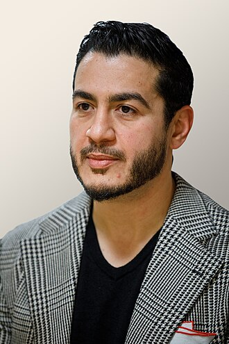

How to vote — before or on August 4
Every registered Michigander can vote in this primary — early and in person, or on Election Day. Here's how to find exactly where you go.
Find your voting location →This opens the official Michigan Voter Information Center. Enter your address to see your early voting site, your Election Day polling place, their hours, and a preview of your ballot.
July 25 – August 2
At least nine days of early voting, statewide. Some communities offer more — your specific site and hours are in the lookup above.
Tuesday, August 4
Polls are open 7:00 a.m. to 8:00 p.m. Vote at your assigned precinct — find it with the same lookup.
Michigan doesn't register voters by party, so at the polls you'll pick either the Democratic or Republican side of the ballot — but only one.
A doctor who fixed broken government — twice.
Abdul El-Sayed is a Michigan-born physician and epidemiologist. He rebuilt Detroit's Health Department after the city's bankruptcy, then led Wayne County's health and human services for 1.8 million residents.
In office, he secured free glasses for kids, removed lead from Detroit schools, expanded access to life-saving Narcan, and launched a program to cancel up to $700 million in medical debt for 300,000 Michiganders.
Now he's running for the U.S. Senate on a campaign funded by people, not by corporate PACs, AIPAC, and its allies.

{kind=link}
What Abdul is fighting for
Money out of politics
No corporate PAC money. A campaign accountable to people, not billionaires.
Money in your pocket
Lower the cost of living — housing, groceries, and care that families can actually afford.
Medicare for All
Guaranteed, high-quality health care for every American.
Three weeks. Every hand matters.
The primary is August 4. Here's how you can help right now.